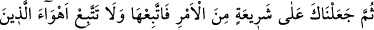
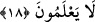
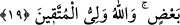

olacak durumu ihtilafın iyice yerleşmesine vesile yaptılar. Bu durum onlarda meydana
gelen düşmanlık ve hasedden dolayı olmuştu. Yoksa vâki bir şüpheden dolayı değildir.
“Onlar kendilerine bilgi geldikten sonra sadece aralarındaki çekememezlik
yüzünden ayrılığa düştüler. Şüphesiz, Rabbin kıyâmet günü, ayrılığa düştükleri
şeylerde onlar arasında” suçluları yakalayıp cezalandırmakla “hüküm verecektir.”
18. Sonra da seni din konusunda bir şeriat sahibi kıldık. Sen ona uy; bilmeyenlerin
isteklerine uyma.
“Sonra seni de buyruğumuzdan”, din işinden “bir şerîate” büyük bir yola
“koyduk.” İsrâiloğullarından sonra senin yolunu kararlaştırdık. O şeriatın ahkâmını
hiçbir şeyi ihlal etmeksizin kendine ve başkalarına uygulayarak “Sen ona uy,
bilmeyenlerin keyiflerine”, câhillerin görüşlerine ve onların şehevâta tâbi olan ve
haktan kaymış olan itikadlarına “uyma.”
et-Te’vilâtu’n-Necmiyye’ de şöyle denmiştir: Biz peygamberler arasında yalnız sana
özel lütuf ve ihsanlarda bulunduk. Bunu bil. Bir takım hakikatleri sana tahsis ettik,
bunları idrak et. Sana bir takım yollar ve prensipler tayin ettik, o yollara gir. Yine sana
bir takım şeriat prensipleri koyduk, onlara uy. O çizgileri geçme. Başkasına uymaya
muhtaç olma. Şâyet Mûsâ ve İsâ (a.s.) senin devrinde hayatta olsalar onların da sana
uymaları gerekir. Cafer Sâdık şöyle demiştir: “Şeriat, işlerin sınırlarını korumaktır.”
Yardım Allah’tandır.
“Bilmeyenlerin
keyiflerine
uyma.”
Bunlar
Kureyş’in
ileri
gelenleridir.
Peygamberimiz (s.a.)’e, “babalarının dinine dön, onlar senden daha üstündüler”
diyorlardı.
19. Çünkü onlar, Allah’a karşı sana hiçbir fayda veremezler. Doğrusu zâlimler
birbirlerinin dostlarıdır; Allah da takvâ sahiplerinin dostudur.
Şâyet sen onlara uyarsan “onlar Allah’tan (gelecek) hiçbir şeyi”, azabı “senden
savamazlar. Zâlimler birbirlerinin velîsidirler.” Onlara dost olanlar, onların heva ve
heveslerine uyanlar; ancak onlar gibi zâlim olanlardır. Çünkü zâlim olmakta aynı
olmaları birbirlerine katılma gerekçeleridir. “Allah ise müttakîlerin/korunanların